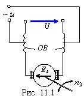

Коллекторные двигатели имеют мощность от десятков ватт до нескольких сотен ватт. Наибольшее распространение в промышленности, в быту, в схемах автоматики получили универсальные коллекторные двигатели с последовательной обмоткой возбуждения. Они могут работать при питании как от сети постоянного тока, так и от однофазной сети переменного тока с частотой 50 Гц (рис. 11.1).

По своему устройству они почти не отличаются от двигателей постоянного тока последовательного возбуждения. Их отличием является лишь то, что они имеют не литые, а шихтованные из листов электротехнической стали станину и полюсы. Последние необходимы для уменьшения потерь на гистерезис и вихревые токи от переменного во времени магнитного потока. Обмотка возбуждения этих двигателей состоит из двух катушек и делается секционированной. Как видно из схемы (рис. 11.1), переменное напряжение сети подаётся не на всю обмотку возбуждения OB, а только на часть её с меньшим числом витков для уменьшения индуктивного сопротивления и радиопомех.
При таком включении OB частота вращения якоря n2 приблизительно одинаковая как при питании от сети постоянного тока, так и при питании от сети переменного тока, например, с напряжением U = 220 В. При питании двигателя от сети переменного тока ухудшается коммутация и усиливается искрение под щётками, поэтому якорную обмотку разделяют на много секций (с малым числом витков), а на коллекторе размещают много пластин (для уменьшения индуктируемых ЭДС в секциях якоря). КПД коллекторных двигателей переменного тока низок (менее 0,7).
Несмотря на недостатки коллекторные двигатели широко используют в устройствах бытовой техники: в пылесосах, вентиляторах, электроинструментах, швейных машинах, в медицинской технике и др., а также в устройствах автоматики. При питании как от источника постоянного напряжения, так и от источника переменного напряжения они допускают возможность плавного и широкого регулирования частоты вращения изменением подводимого к двигателю напряжения. Эти двигатели особенно широко применяются там, где при промышленной частоте 50 Гц требуется получить частоты вращения вала 4000…30000 об/мин, недостижимые при применении асинхронных и синхронных двигателей промышленной частоты без повышающего редуктора.